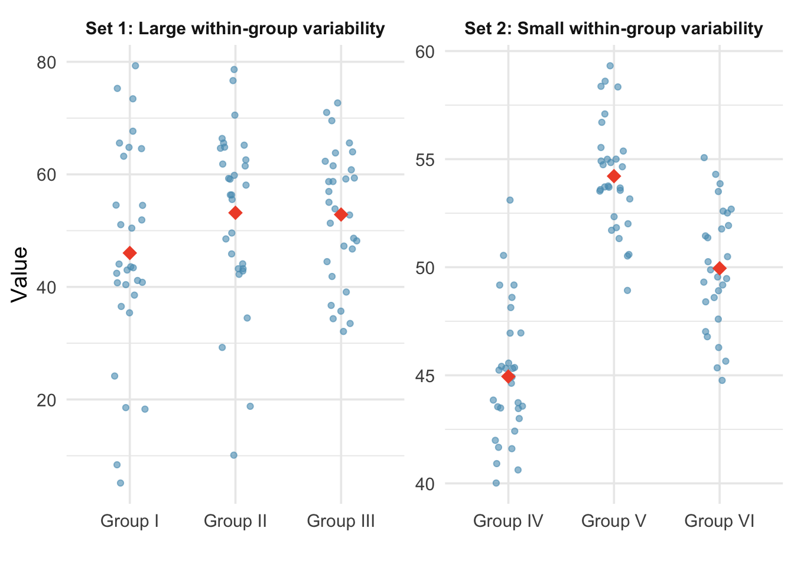

4.3 Analysis of Variance
In earlier chapters, we developed methods to compare the mean of a quantitative outcome across two groups. An important aspect of those analyses was to look at the difference in sample means as an estimate for the difference in population means. When comparing more than two groups, simple subtraction will not fully capture the variation across three or more groups. As with two groups, the research question focuses on whether group membership is independent of the quantitative response variable. In this chapter, we focus on a new statistic that incorporates differences in means across more than two groups. Although the ideas are similar to the \(t\)-test, they have earned their own name: ANalysis Of VAriance, or ANOVA.
Key Concepts
- Use ANOVA to test for a difference in means among several groups
- Explain how variation between groups and variation within groups are relevant for testing a difference in means between multiple groups.
- Create confidence intervals for single means and differences of means after doing an ANOVA for means, recognizing the problem of multiplicity
Sometimes we want to compare means across many groups. We might initially think to do pairwise comparisons. For example, if there were three groups, we might compare the first mean with the second, then with the third, and finally compare the second and third means, a total of three comparisons. However, this strategy can be treacherous. If we have many groups and do many comparisons, it is likely that we will eventually find a difference just by chance, even if there is no difference in the populations. Instead, we should apply a holistic test to check whether there is evidence that at least one pair of groups is different, which is where ANOVA saves the day.
Consider the figure below showing two sets of three groups.
Compare Groups I, II, and III. Can you visually determine if the group differences are real? Now compare Groups IV, V, and VI.
Analysis of Variance
In the example above, any real difference in Groups I, II, and III is difficult to discern because the spread within each group was large compared to the spread between the means. On the other hand, Groups IV, V, and VI show noticeable differences because the spread within was samller relative to the variability between the means. We will use the spread/variability to decide which proveded stronger evidence.
Recall, the test statistic for a two-sample \(t\)-test is:
\[ t = \frac{ \overline{x}_1 - \overline{x}_2 }{ \sqrt{ \frac{ s_1^2 }{ n_1 } + \frac{ s_2^2 }{ n_2 }}} \]
In the numerator of the test statistic, we calculated the difference between the two sample means, or the spread between the two groups. In the denominator, we calculated the standard error, which is a measure of spread within the two groups. How would this test statistic change if we wanted to test if there was a difference in means between three or more groups?
ANOVA is an extension of the two-sample \(t\)-test to more than two groups.
The Analysis of Variance (ANOVA) procedure can be regarded as an extension of the two-sample \(t\)-test to more than two samples. In fact, the test statistic is formed in much the same way. The test statistic for ANOVA is an \(F\)-statistic, and has the following form.
\[ F = \frac{ \text{Spread \textit{between} group means} }{ \text{Spread \textit{within} groups}} \]
This is the same concept as our \(t\)-statistic from a two sample \(t\)-test; in fact, we can think of the difference in means (numerator of t) to be a measure of spread between the means.
Statement of hypotheses
The ANOVA hypothesis test is used to see if groups have significantly different averages. If we are considering \(k\)groups, then the hypotheses for the ANOVA test are
\[ \begin{aligned} H_0{:} & \hspace{.5em} \mu_1 = \mu_2 = \ldots = \mu_k \\ H_A{:} & \hspace{.5em} \text{At least two } \mu_i \text{'s differ} \end{aligned} \]
Class Example 4.3.1: Quality control for lenses
A company that produces glass lenses would like to know if the three presses they use are producing the same average thickness in lens. They hire an engineer to test to see if the machines should be calibrated. Write the hypothesis to test this using an ANOVA hypothesis test.
Finding the test statistic
The test statistic for an ANOVA hypothesis is an \(F\)-statistic with a numerator that measures variability between groups and a denominator that measures variability within groups.
SS stands from sum of sqaures
MS stands from mean sqaures
B indicates “between” and W indicates “within”
\[ F = \frac{MSB}{MSW} = \frac{\frac{SSB}{df_B}}{\frac{SSW}{df_W}}\]
The equations for the sums of squares and df’s are
\[ \begin{align} SSB &= n_1(\overline{x}_1 - \overline{x})^2 + n_2(\overline{x}_2 - \overline{x})^2 + \cdots + n_k(\overline{x}_k - \overline{x})^2 \\ SSW &= (n_1 - 1)s_1^2 + (n_2 - 1)s_2^2 + \cdots + (n_k - 1)s_k^2 \\ df_B &= k - 1 \\ df_W &= n-k \end{align} \]
where \(\overline{x}_i\) is the sample mean for group \(i\), \(s_i\) is the standard deviation for group \(i\), and \(n_i\) is the sample size for group \(i\). The values of \(n\) and \(\overline{x}\) are from all data. \(n\) is the total sample size, or \(n = n_1 + n_2 + \cdots + n_k\). \(\overline{x}\) is the grand or overall mean. It is the mean of all data or can be computed from the individual group means by
\[ \overline{x} = \frac{n_1\overline{x}_1 + n_2\overline{x}_2 + \cdots + n_k\overline{x}_k }{n}.\]
When the variation from groups to group (between) is large enough to overshadow the variation within the groups, we have a large MSB as compare to MSW, which produces a larger F. When the variation from group to group is large, we would want to conclude at least one mean differs and reject \(H_0\). Therefore, the ANOVA is always considered a right-tailed test.
Finding the p-value
To find the \(p\)-value we use an \(F\)-distribution. The \(F\) distribution a right-skewed distribution that depends on two degrees of freedom, which are called the df numerator and df denominator. For an ANOVA the df numerator is \(df_B = k - 1\) and the df denominator is \(df_W = n - k\). We can use StatLens or some other technology to find the area in the right-tail beyond our \(F\) test statistic using the appropriate degrees of freedom.
Summarizing all quantities in an ANOVA table
Because there are various quantities calculated when doing an ANOVA test, they are nicely summarized in an ANOVA table. The general form of an ANOVA table is given below.
| Source | df | Sum Sq | Mean Sq | F value | p-value |
|---|---|---|---|---|---|
| Between/Group | \(k-1\) | \(SSB\) | \(MSB = \frac{SSB}{k-1}\) | \(F = \frac{MSB}{MSW}\) | \(p\)-value |
| Within/Error | \(n-k\) | \(SSW\) | \(MSW = \frac{SSW}{n-k}\) | ||
| Total | \(n-1\) | \(SST\) |
Note that \(SST = SSB + SSE\) and
\(df_{Total} = df_B + df_W = (k-1) + (n-k) = n-1\)
Class Example 4.3.2: Quality control continued
Fill in the remaining spots in the ANOVA table below.
| Source | df | SS | MS | F | \(p\)-value |
|---|---|---|---|---|---|
| Group | 10.30 | ||||
| Error | |||||
| Total | 14 | 34.40 |
Find the \(p\)-value for the \(F\)-statistic that tests to see whether or not average glass thickness differs for each press. What are the degrees of freedom for the numerator and denominator? State your decision and provide an interpretation in the context of the problem.
Conditions for ANOVA
There are three conditions to check before performing ANOVA:
Independence. If the data are a simple random sample, this condition is generally satisfied. For experiments, carefully consider whether the data may be independent (e.g., no pairing).
Approximately normal. As with one- and two-sample testing for means, the normality assumption is especially important when sample sizes are small. With large sample sizes within each group, we look mainly for extreme outliers.
Constant variance. The variability in the groups should be about equal. This can be checked by examining side-by-side box plots or comparing the standard deviations across groups. A common rule of thumb is that the ratio of the largest to smallest group standard deviation should be less than 2.
Class Example 4.3.3: Caffeine and finger tapping
Does caffeine consumption have an effect on twitch movements? To investigate this question, the following experiment was conducted. 30 subjects were randomly assigned to one of three groups, with 10 subjects in each group. The subjects were then given a tablet containing 0mg, 100mg, or 200mg of caffeine. Two hours later, they were asked to tap their finger as quickly as possible for one minute. Summary statistics are provided in the table below.
| 0 mg | 100 mg | 200 mg | |
|---|---|---|---|
| \(\overline{x}\) | \(244.8\) | \(246.4\) | \(248.3\) |
| \(s\) | \(2.394\) | \(2.066\) | \(2.214\) |
- What are the variables recorded in this study? Are they categorical or quantitative? Which of the variables is the independent variable? Dependent variable?
- Based on the summary statistics above, do you think that caffeine has an effect on finger tapping?
- Test to see whether caffeine consumption causees a difference in the average number of finger taps (use \(\alpha = 0.05\))
| Source | df | SS | MS | F | \(p\)-value |
|---|---|---|---|---|---|
| Group | \(61.4\) | ||||
| Error | \(134.1\) | ||||
| Total |
- Is there a practical difference between the groups? Is this the same as a statistical difference?
Pairwise comparisons and inference after ANOVA
Although an ANOVA hypothesis test will tell you that there is a difference in at least one of the population means, it does not specify which averages are different. If \(H_0\) is not rejected in an ANOVA, then there is no need to look for differences among population means. However, if \(H_0\) is rejected, the next step is to see which means are actually different from the others. For a significant ANOVA test, there are a number of methods to compare the averages for the different groups.
Pairwise comparisons is just a fancy way of saying consider all the possible pairs of means and conduct hypothesis tests to see if they are different.
Pairwise comparisons are also called multiple comparisons or post-hoc tests
When we compare these groups, we do what is called pairwise comparisons of the means. The phrase pairwise comparisons means conducting hypothesis tests between all the possible pairs of means to see which pairs are different. We can find the number of comparisons among \(k\) population means by using the formula
\[ \text{\# of comparisons} = \binom{k}{2} = \frac{ k! }{ 2! (k - 2)!} = \frac{k \times (k-1)}{2} \]
where \(k\) is the number of groups. This is read as “\(k\) choose 2” and you can use the nCr function on your calculator to do the calculation.
Class Example 4.3.4: Caffeine and finger tapping continues
How many pairwise comparisons would we have? Suppose that there had been four caffeine levels instead. How many pairwise comparisons would this make?
The multiple testing problem
The family-wise error rate (FWER) is the chance that we made a Type I error in at least one of our tests.
If you use a two-sample \(t\)-test to compare two averages at \(\alpha = 0.05\), then there is a 5% chance that we will make a Type I error. However, as we conduct two-sample \(t\)-tests to compare more pairs of averages, then we don’t want to consider the Type I error rate for only a single test. We want to know the family-wise error rate (FWER), or the chance that we make a Type I error in at least one of the tests we conduct. To find the overall Type I error rate when comparing all pairwise comparisons, \(c\), for \(k\) groups, we use the following formula:
\[ FWER = 1 - (1 - \alpha)^c\]
Class Example 4.3.5: Caffeine and finger tapping continues
IF we conduct pairwise comparisons for the average number of finger taps for the 3 caffeiene levels at \(\alpha = 0.05\), what is the FWER?
The table below shows how the FWER grows with the number of comparisons when \(\alpha = 0.05\):
| Number of groups (\(k\)) | Number of comparisons (\(c\)) | FWER |
|---|---|---|
| 3 | 3 | 0.143 |
| 4 | 6 | 0.265 |
| 5 | 10 | 0.401 |
| 6 | 15 | 0.537 |
| 10 | 45 | 0.901 |
With 10 groups, there is a 90% chance of making at least one Type I error if we use unadjusted pairwise tests. This is the core of the multiple comparisons problem: we need procedures that control the FWER at an acceptable level (typically 0.05).
The Bonferroni correction
There are a number of ways to correct for the overall Type I error rate, but one of the easiest is the Bonferroni correction. When we do this correction, if we are conducting \(c\) tests and want the overall FWER to be at most \(\alpha\), we use a stricter discernibility level for each individual test.
\[ \alpha^* = \frac{\alpha}{c} \]
Class Example 4.3.6: Bonferroni correction for finger taps
If we want the overall Type I error rate to be 0.05, what is the Bonferroni corrected \(\alpha^*\) we should use when comparing the average number of finger taps for the 3 caffeine levels? What Bonferroni corrected \(\alpha^*\) would we use if there were 4 caffeine levels instead of 3?
Class Example 4.3.7: Restaurant tips
In this example, we will be conducting many different tests from a dataset that contains information on the tipping patterns of patrons of the First Crush bistro in northern New York state. The data from 157 bills include the amount of the bill, size of the tip, percentage tip, number of customers in the group, whether or not a credit card was used, day of the week, and a coded identity of the server (A, B, or C). The first four variables are quantitative and the last three are categorical. For each test, you can use a hypothesis test or confidence interval (if appropriate). On each test, be sure to verify the necessary conditions.
- Most restaurant patrons leave a tip between 15% and 20% of the bill, and some restaurant customers determine the percent tip to leave based on the quality of the service. Summary statistics for mean tip percentage left for each of the three servers and a partial ANOVA table are given in the tables below.
| Server | Sample size | Mean | Std. Dev. |
|---|---|---|---|
| A | 60 | 17.543 | 5.504 |
| B | 65 | 16.017 | 3.485 |
| C | 32 | 16.109 | 3.376 |
| Source | df | SS | MS | F | \(p\)-value |
|---|---|---|---|---|---|
| Server | \(41.57\) | ||||
| Error | |||||
| Total | \(3001\) |
- Conduct the appropriate hypothesis test to see if there a difference in mean tip percentage between the three servers (use \(\alpha = 0.05\)).
- Is it appropriate to examine pairwise differences to see which of the servers differs in average tip percentage? Explain.
- Regardless of your answer in a.ii, if we want the overall Type I error rate to be 0.05, what is the Bonferroni corrected \(\alpha\) we should use when comparing the average tip percentage for the servers?
- The table below summarizes the number of bills by server. Conduct the appropriate hypothesis test to see if the servers serve equal numbers of tables.
| Server | A | B | C | Total |
|---|---|---|---|---|
| Number of bills | \(60\) | \(65\) | \(32\) | \(157\) |
Summary
In this chapter, we introduced the mathematical model for comparing means across two or more groups using ANOVA. The \(F\)-statistic measures the ratio of between-group variability (MSG) to within-group variability (MSE). When the null hypothesis is true and the conditions are satisfied, the \(F\)-statistic follows an \(F\)-distribution. A discernible result tells us that at least one group mean differs from the others, but does not identify which groups differ.
Performing many pairwise tests without correction inflates the family-wise error rate, making false positives likely. The Bonferroni correction divides the discernibility level by the number of comparisons, which is simple but conservative and allows us to determine which groups differ.